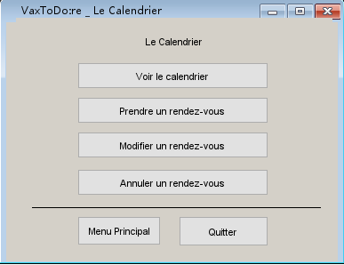

Plannification
Suite a l’initiative VaxTodo, la compagnie a but non lucrative GoodPeople: assister a correctement gerer la forte demande en vaccination, ainsi que le suivi des personnes vaccinees, tout en respectant les diverses limitations necessaires.
Compréhension du domaine
Après de nombreuses rencontres et une familiarisation avec l'activité VaxTodo, nous avons préparé un glossaire rassemblant les termes et expressions clés caractérisant l'environnement.
Répartition des tâches
Xianglong GAO
- Analyse des Sénarios et cas d'utilisation.
- Analyse des Risques.
- Lister le glossaire.
- Design des prototypes.
- Implémentation de prototype en Java.
- Poser et analyser des questions aux clients.
- Recevoir et analyser les exigences.
Jaidi YU
- Recevoir et analyser les exigences.
- Collecter les informations dans un page html.
- Implémentation de prototype en Java.
- Poser et analyser des questions aux clients.
- L'introduction du projet.
- Estimer la priorité des tâches.
Florient GADEDJRO
- Arranger l'échéancier
- Poser et analyser des questions aux clients.
- L'introduction du projet.
- Recevoir et analyser les exigences.
- Lister le glossaire.
Ehéancier

Qusetions posées
Session 1:
- Quelle est la limite du nombre de personnes qui peuvent prendre une réservation, en fonction de vos capacités (personnel disponible, nombre de vaccins disponible, ...)?
-Pour respecter au mieux les règles sanitaires, le local se limite à 40 personnes,donc la limite de est 40 personnes.
- Quelles exigences les patients doivent-ils fournir, et quelles réglementations sont liées aux informations personnelles?
-Il permet à toute personne majeure agée de 18 ans et plus de prendre un rendez-vous avec GoodPeople pour se faire vacciner.
- Quelles sont les spécificités du suivi des patients, en fonction des types de vaccins (combien de temps avant la 2ème dose, combien de temps durent les symptômes,..)?
-La compagnie assure aussi le suivi pour les futures doses et autres requêtes liées à la vaccination, telles qu'une demande de preuve de vaccination ou une demande de changement ou d'annulation d'un rendez-vous.
Session 2:
- La notification envoyée par courriel est-il une tâche automatique ou elle est envoyé manuellement par les employés?
-Manuellement. Elle est soumise suite à une action/commande de l'employé.
- Est-ce que le numéro de compte du visiteur crée lors de la première visite est donné au visiteur pour qu'il le garde par lui-même? Ainsi, lors de son deuxième vaccination le visiteur donne directement son numéro de compte pour s'identifier.
-Oui.
La priorité des TÂCHES
- Prendre les rendez-vous (fonctionnalité essentielle)
- Enregistrer les information des visiteurs (fonctionnalité essentielle)
- La gestion des rendez-vous (fonctionnalité nécessaire)
- La gestion des comptes visiteurs (fonctionnalité nécessaire)
- La gestion des bénévoles (fonctionnalité importante)
- La suivi des rendez-vous (fonctionnalité importante)
Glossaire
- GoodPeople
- Organisme à but non lucrative, en coordination avec le gouvernement pour prêter main-forte à la campagne de vaccination.
- un rendez-vous
- Un rendez-vous pour la vaccination.
- un local
- Lieu dédié à la vaccination.
- Des professionnels de la santé
- Les vaccinateurs, chargeurs et les injecteurs qui se sont portés volontaires pour supporter l'initiative.
- les employés
- les employés de l'organisme de GoodPeople.
- Bénévole
- Les bénévoles qui aident le déroulement de la vaccination. Accueillir et acheminer les visiteurs aux employés.
- visiteur
- Une personne pour se faire vacciner.
- VaxTodo:re
- Système pour prendre de rendez-vous et faire les suivis par rapport à la vaccination.
- 1ere Dose de vaccin
- Le dosage est plus petit pour débuter la vaccination.
- 2eme dose de vaccin
- À faire après la première dose de vaccin afin de compléter la vaccination.
- Le suivi
- Pour surveiller le nombre et type de dose qui est pris par le patient et les symptômes des patients après avoir fait le(s) vaccin(s).
- Preuve de vaccination
- Une pièce qui est pour prouver la réalisation de la vaccination. Soit 1ère dose ou 2ième dose.
- un numéro
- Un numéro donné au visiteur par le bénévole dans le file d'attente.
- Numéro de réservation unique
- Un numéro unique envoyé par courrier au visiteur planifiée pour confirmer son rendez-vous lors de sa présence.
- Numéro de compte du visiteur
- Numéro unique à 12 chiffres rattaché à une adresse courriel unique pour identifier les visiteurs.
- code d'employé
- Un code à 9 chiffres utilisé avec un mot de passe afin d'identifier un employé.
- un lot
- Un lot pour identifier le type de vaccin utilisé.
- Prise de rendez-vous (téléphone)
- Réservation pour une visite planifiée par le téléphone.
- planifier une visite
- Faire la réservation une autre visite soit après la première dose ou lorsque le visiteur n'a pas sur lui sa carte d'assurance maladie ou que sa carte est expirée.
- Créer un compte
- Création d'un compte lors de la première visite du visiteur, ce qui rattache toutes ces activités: vaccins et réservations.
- Accéder à la liste des rendez-vous
- Faire l'ajout ou l'annulation dans la liste des rendez-vous.
- Accéder à la liste des bénévoles
- Faire l'ajout, la modification ou la suppression d'un bénévole.
Modélisation du domaine
Cas d'utilisation

Scénarios
Cas d'utilisation: login
But: Un employé authentifie son numéro d'employé et son mot de passe pour accéder au système
Acteurs: Employé (principal)
Scénario principal
- L'employé ouvre le système VaxToDo:re.
- L'employé entre son numéro d'utilisateur.
- L'employé entre son mot de passe.
- Le système fait la validation du numéro d'utilisateur et du mot de passe entrés.
- Validation avec succès.
- Le système arrive sur le menu principal.
Scénarios alternatifs
5a. Validation échouée
5a.1 Le système demande au utilisateur d'entrer de nouveau le numéro d'utilisateur et le mot passe.
Cas d'utilisation: prise de rendez-vous
But: Un employé planifie un rendez-vous pour un visiteur pour la vaccination
Acteurs: Employé (principal), Visiteur (secondaire)
Sénario principal
- Le visiteur désire de prendre un rendez-vous.
- Appel au cas login
- L'employé clique sur le calendrier et vérifier les diponibilités
- Le visiteur confirme le choix à l'employé.
- L'employé lui demande son nom au complet, son courriel et le type de dose qu'il désire
- L'employé effectue la réservation dans le système et mettre les détails du rendez-vous
- l'employé envoie le numéro de réservation par courriel au visiteur.
Cas d'utilisation: créer un compte visiteur
But: Un employé crée un compte unique pour enregistrer les donnés du visiteur
Acteurs: Employé (principal), Visiteur (secondaire)
Préconditions: Le visiteur est venu au local pour la première fois.
Sénario principal
- Le visiteur arrive devant l'employé
- Appel au cas login
- L'employé entre dans la page de la gestion des comptes d'utilisateurs
- L'employé clique ajouter un compte visiteur.
- L'employé demande au visiteur ses informations personnelles.
- L'employé entre les informations personnelles dans le dossier du visiteur.
- Le compte du visiteur est créé avec succès.
- L'employé donne le numéro de compte au visiteur pour future utilisation
Cas d'utilisation: Traitement d'un visiteur
But: Un employé confirme le rendez-vous du visiteur, créer un compte de visiteur, faire l'entrevue et planier un rendez-vous si besoin
Acteurs: Employé (principal), Visiteur(secondaire)
Scénario principal
- Le visiteur dans la file d'attente est appelé par un employé et dirige vers ce dernier
- Appel au cas login
- L'employé clique sur la gestion des rendez-vous.
- L'employé demande au visiteur son numéro de réservation.
- L'employé récupère les informations personnelles du visiteur.
- L'employé confirme le but de la visite du visiteur.
- L'employé demande au visiteur sa carte d'assurance maladie
- L'employé remplit avec le visiteur un questionnaire dans le système
- L'employé donne au visiteur un billet avec un numéro pour une nouvelle file d'attente
- L'employé transmet le formulaire rempli et signé aux professionels de la santé.
Scénarios alternatifs
2a. Le visiteur n'a pas de réservation
2a.1 La vérification de rendez-vous est terminée. Le visiteur est considéré comme un visiteur spontané.
4a. Le visiteur est venu pour sa première dose
4a.1 L'employé crée un compte pour le visiteur.
4a.2 L'employé demande au visiteur s'il désire planifier une seconde dose.
5a. Le visiteur n'a pas sa carte d'assurance maladie
5a.1 La visite est annulée
5a.2 l'employé l'invite à prendre un nouveau rendez-vous
5b. La carte d'assurance maladie du visiteur est annulée.
5b.1 La visite est annulée
5b.2 l'employé l'invite à prendre un nouveau rendez-vous
Cas d'utilisation: Suivi de la vaccination
But: l'employé envoie des courriels sur les détails de la vaccination au visiteurs déjà venu et pour la notification des prochaines visites.
Acteurs: Employé (principal)
Sénario principal
- Appel au cas login
- L'employé clique sur la gestion des comptes clients.
- L'employé clique sur le production du rapport de vaccination d'une visite.
- L'employé envoie un courriel aux visiteurs ayant reçu le vaccin leur rapport de vaccination
- L'employé retoure au menu principal
- L'employé clique sur le calendrier.
- L'employé vérifie les visites planifiées prévus pour les prochianes 48 heures.
- L'employé clique sur envoyer notification dans le système pour envoyer un courriel aux visiteurs
Cas d'utilisation: Gestion des rendez-vous
But: l'employé peut ajouter ou annuler les rendez-vous
Acteurs: Employé (principal) Visiteur (Secondaire)
Scénario principal
- Appel au cas login
- Appel au cas Prise de rendez-vous
Scénario alternatifs
3a. L'employé annule un rendez-vous pour un visiteur
3a.1 L'employé entre le numéro de rendez-vous.
3a.2 L'employé entre son mot de passe pour confirmer l'annulation d'un rendez-vous.
Cas d'utilisation: Gestion des comptes visiteurs
But: l'employé peut ajouter, supprimer ou modifier les comptes visiteurs.
Acteurs: Employé (principal) Visiteur (Secondaire)
Scénario principal
- Appel au cas login
- Appel au cas créer un compte visiteur
Scénario alternatifs
3a. L'employé modifie un compte visiteur.
3a.1 L'employé entre le numéro du compte visiteur.
3a.2 L'employé demande au visiteur l'information qu'il faut être modifié.
3a.3 L'employé fait la modification des informations personnelles du visiteur.
3b. L'employé supprime un compte visiteur.
3b.1 L'employé entre le numéro du compte visiteur.
3b.2 L'employé entre son mot de passe pour confirmer la suppression d'un compte visiteur.
Cas d'utilisation: Gestion des bénévoles
But: l'employé peut ajouter, supprimer ou modifier la liste des bénévoles
Acteurs: Employé (principal) Bénévoles (Secondaire)
Scénario principal
- Un bénévole arrive devant l'employé
- Appel au cas login
- L'employé entre dans la page des bénévoles
- L'employé demande au bénévole ses informations personnelles et ses disponibilités de venir au local.
- L'employé ajoute le bénévole dans la liste des bénévoles.
Sénario alternatifs
3a. L'employé modifie les informations d'un bénévole.
3a.1 L'employé entre le nom du bénévole.
3a.2 L'employé demande au bénévole l'information qu'il faut être modifié.
3a.3 L'employé fait la modification des informations du bénévole.
3b. L'employé supprime un bénévole de la liste.
3b.1 L'employé entre le nom du bénévole.
3b.2 L'employé entre son mot de passe pour confirmer la suppression d'un bénévole.
Analyse
Notre analyse préliminaire nous a permet de...
Risques
- Perdre des données sur les ordinateurs
- Perdre des données sur le serveur
- Violation des données sur l'Internet
- Difficile d'utiliser le système pour tous les employés
- Personne non autorisée accède au système
Exigences fonctionnelles
- Prise de rendez-vous
- Gestion des visiteurs
- Gestion des bénévoles
- Gestion des rendez-vous
- Confirmation du but de la visite
- Déterminer le type de dose
- Sauvegarder les informations personnelles
Exigences non-fonctionnelles
- Assurer la sécurité des informations privées des patients
- Conservation des données
- Une interface plus conviviale
- Vérification d'utilisateur
Prototype
-

La page de login du VaxToDo:re pour accéder à au menu principal. -

Le menu principal du logiciel VaxToDo:re. -

Page pour consulter le calendrier et la gestion des rendez-vous -
La page pour consulter la liste de tous les visiteurs déjà venus et aussi pour la gestion et le suivi des visiteurs. -

La page pour consulter la liste des bénévoles et aussi pour la gestion des bénévoles.